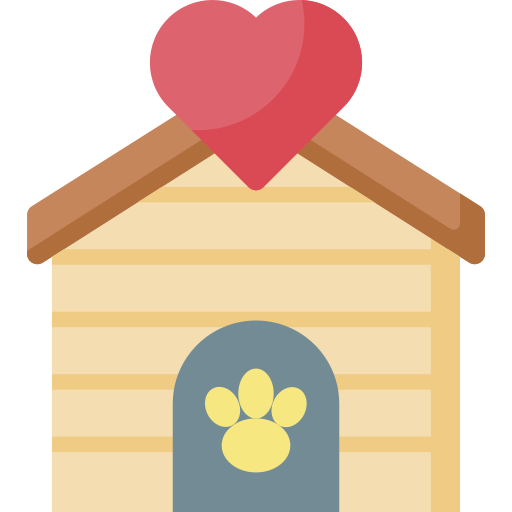

Adopt Montreal  |
|
|---|---|
|
Home Page Create an account Find a dog/cat Dog Care Cat Care Have a pet to giveaway? Logout Contact Us |
Taking care of your dogPets need healthy food.Just like people, pets need food that meets their specific nutritional needs. Dog foods are designed to meet a dog’s nutritional needs and cat foods are designed to meet a cat’s nutritional needs. Importantly, their dietary needs are very different. Puppies require different food from senior dogs. Pet’s with health issues may require special diets. Table scraps are typically not good for dogs and cats because many of the foods we eat, such as salt, garlic, and onions are bad for your pet’s health and can make them sick or even be fatal. Don’t forget to give pets the right amount of food, too! Overfeeding your pet or giving him too many treats could lead to obesity, which could consequently trigger more health problems such as heart disease, renal problems, and more. Weigh your options when it comes to pet food to avoid these kinds of illnesses — and if you don’t exactly know what foods are best for your pet, it’s a great idea to ask the opinion of your vet! Give your pets 24/7 access to fresh drinking water.Just like human beings, pets need ready access to water in order to survive. Always provide a clean, fresh bowl of water to all animals in your care. Make it accessible by placing it near their food bowl, and remember to refill your pet’s water bowl at least two times a day. This will keep your pet cool, hydrated, and healthy. If your pet lives in water, like fish and turtles, clean aquariums at least once a week. Failing to do so could lead to smelly tanks and sick pets! Proper pet care includes providing a safe, cozy shelter.Cars, aggressive dogs, and predators are an ongoing threat to cats, which is why they should be kept indoors for their own safety. Many cats enjoy having a covered bed or cocoon-like space inside where they can retreat to and feel safe. If you let your dog out in your fenced-in yard off-leash, be sure he is wearing tags and is microchipped, and that the microchip is registered and your contact information is up-to-date. It is also a good idea to register your pet with Finding Rover. Always provide shade and shelter, along with water. Indoors, dogs also typically enjoy having their own dog bed and older dogs, in particular, may benefit from having an orthopedic bed. Pets need protection from extreme hot and cold temperatures and other extreme weather and shouldn’t be expected to live exclusively outside. Another concern is predators like coyotes (who tend to lurk at night but are often present in the daytime as well) that might consider your pets as suitable prey. Source |
You information is safe!We promise that your information will not be sold or misused. We protect the website builder from any incorrect information posted by a pet owner. Privacy disclaimer |
|